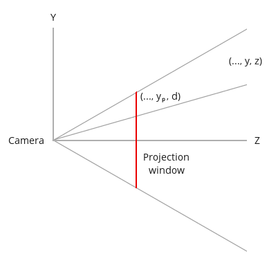

线性代数之透视矩阵Perspective Matrix
Tags: matrix, linear algebra
本文部分内容翻译自：Tutorial 12: Perspective Projection
本文介绍的是OpenGL中的透视矩阵。
介绍
所谓的透视矩阵，指的是一个“降维”的转换过程。
设想下一个在3维空间里的3D模型，它必然拥有一些顶点信息，设其中任意顶点的坐标为(x,y,z,1)（后面的1是齐次坐标的意思），当我们需要把这个模型投影到某个平面上时，它就从3维变成了2维（看过三体3的童鞋就容易理解了，这就是二向箔!），而顶点坐标(x,y,z,1)则变成(x,y,d,?)。
可以注意到，经过透视变换后的顶点，依然是四维的形式，只是含义变了，其中的(x,y)分量指的是这个顶点在投影平面上的坐标(显然是因为投影平面相当于一个2维坐标系)。d指的是这个投影点的深度(depth)，d一般是规范化的，范围是[-1,1]。d的作用在下一个渲染阶段(Depth Test)大有用处。而后面的?，无法一言蔽之，下文会讲到这个问题。
视锥体 Frustum
视锥体，指的是一个有限的椎体空间，处于这个视锥体里的对象，才是“可见”的对象，可见的对象会被渲染到“视平面”上（三维到二维的投影）。视锥体有4个参数：
- aspect ratio，简称ar，ar = 视平面width/视平面height
- （vertical）field of view，简称fov，指yz平面的视角大小，即下文的\( \alpha \)角。
- near Z Plane，简称near面，是一个平行于xy平面的面，世界坐标系下是一个浮点值，可以用来裁剪太靠近摄像机的物体
- far Z Plane，简称far面，含义类似near面，可以用来裁剪太远离摄像机的物体
视平面可以认为是视锥体的near面；far面相对来说并没有那么重要，因为我们知道人眼的“视锥体”是没有far面的（比如裸眼可以看到月亮星星，far面其实是无限远的），在图形学中，far面主要是用来裁剪太过遥远的物体、提高渲染效率的。
下面这个是我找到的一个视锥体的演示程序，非常直观地展示了视锥体的作用：
演示程序来源：http://webglfundamentals.org/webgl/lessons/webgl-3d-perspective.html
从摄像机位置（一个点）观察视平面的话，是长这样子的：

(图片来自www.ogldev.org)
y轴范围是[-1,1]，x轴范围是[-ar,ar]，因为ar = 视平面width/视平面height，其实也就是ar=屏幕width/屏幕height，因为大部分屏幕都是宽屏，所以ar的值一般是大于1的。当屏幕宽高一致时，视平面才是上面这幅图的样子。
现在，换成侧视角来观察这个视锥体(yz平面)：

(图片来自www.ogldev.org，有修改)
红线是投影面(视平面)，绿色线是摄像机到投影面的距离d，\(\alpha \)角即是fov。从此图可以得出：
\[ tan(\frac {\alpha } { 2 } ) = \frac {1} {d} \]
\[ d = \frac {1} { tan(\frac {\alpha } { 2 } ) } \]
接下来是求某顶点\( (x,y,z,w) \)在投影面上的投影坐标\( (x_{p},y_{p},z_{p},w_{p}) \)。 看下面的侧视图，我们可以先求解\( y_{p} \)：

根据相似三角形定理，可以得到：
\[ \frac {y_{p} } { d } = \frac { y } { z } \]
\[ y_{p} = \frac { y * d } { z } = \frac { y } { z * tan(\frac {\alpha } { 2 } ) } \]
同样的，x分量也可以用相同的公式求得：
\[ \frac {x_{p} } { d } = \frac { x } { z } \]
\[ x_{p} = \frac { x * d } { z } = \frac { x } { z * tan(\frac {\alpha } { 2 } ) } \]
此时要考虑到一个问题： \( y_{p} \)的范围是[-1,1]，而\( x_{p} \)是[-ar, ar]。为了让\( x_{p} \)和\( y_{p} \)一致，需要让\( x_{p} \)除以ar，从而得到：
\[ x_{p} = \frac { x } { ar * z * tan(\frac {\alpha } { 2 } ) } \]
\[ y_{p} = \frac { y } { z * tan(\frac {\alpha } { 2 } ) } \]
到了这里，我们可以开始构造下透视矩阵了：
\[ Perspective Matrix = M = \left[ \begin{matrix} a&b&c&d\\ e&f&g&h\\ i&j&k&l\\ m&n&o&p\\ \end{matrix} \right] \]
被转换的顶点的坐标(矩阵)是：
\[ V = \left[ \begin{matrix} x\\ y\\ z\\ w\\ \end{matrix} \right] \]
转换后的投影点是:
\[ V_{p} = \left[ \begin{matrix} x_{p} \\ y_{p} \\ z_{p} \\ w_{p} \\ \end{matrix} \right] \]
转换过程:
\[ MV = V_{p} \]
\[ \left[ \begin{matrix} a&b&c&d\\ e&f&g&h\\ i&j&k&l\\ m&n&o&p\\ \end{matrix} \right] \left[ \begin{matrix} x\\ y\\ z\\ w\\ \end{matrix} \right] = \left[ \begin{matrix} x_{p} \\ y_{p} \\ z_{p} \\ w_{p} \\ \end{matrix} \right] \]
从以上等式可以得到:
\[ ax + by + cz + dw = x_{p} = \frac { x } { ar * z * tan(\frac {\alpha } { 2 } ) } \]
这是M矩阵第一行和V的点积等式。求解这个等式的话，会发现可以让b=0、c=0，从而等式简化成:
\[ ax + cz = \frac { x } { ar * z * tan(\frac {\alpha } { 2 } ) } \]
这样做后就有了个问题：找不到可以代入a、c的常量值。其中比较多余的cz，如果干掉的话，意味着c等于0，等式进而变成:
\[ ax = \frac { x } { ar * z * tan(\frac {\alpha } { 2 } ) } \]
观察等式，可以发现等式右边有个多余的z。OpenGL中对这个问题的处理是，在变换过程中强(偷)制(偷)插入一个步骤：把矩阵相乘的结果值再统一除以z（Divide z技术）！这么做之后，事情就简单了，上面的等式可以推出：
\[ a = \frac { 1 } { ar * tan(\frac {\alpha } { 2 } ) } \]
对于M矩阵的f，用同样的做法可以得到:
\[ f = \frac { 1 } { tan(\frac {\alpha } { 2 } ) } \]
从而得到了M的前两行的值：
\[ M = \left[ \begin{matrix} \frac { 1 } { ar * tan(\frac {\alpha } { 2 } ) }&0&0&0\\ 0&\frac { 1 } { tan(\frac {\alpha } { 2 } ) }&0&0\\ i&j&k&l\\ m&n&o&p\\ \end{matrix} \right] \]
到了这里，其实透视变换问题已经解决大半了，因为\(x_{p}\)和\(y_{p}\)都可以算了，并且可以规范化到[-1,1]范围。剩下的问题是\(z_{p}\)，即顶点的深度信息。
前面提到的Divide z技术会导致一个问题：z分量在转换过程中会因为Divide z技术而导致变成1。针对这个问题，OpenGL的解决方案是，把V的z值复制覆盖到w上，从而把原始z值保存起来，同时Divide z仅对x、y、z有效（跳过w）。
因此，M的后两行也可以得到了：
\[ M = \left[ \begin{matrix} \frac { 1 } { ar * tan(\frac {\alpha } { 2 } ) }&0&0&0\\ 0&\frac { 1 } { tan(\frac {\alpha } { 2 } ) }&0&0\\ 0&0&0&0\\ 0&0&1&0\\ \end{matrix} \right] \]
然而，事情还没有结束。现在用这个新的M去做透视变换后，得不到规范化的z分量。规范化的，可以使得后续的渲染步骤不需要知道near Z和far Z。为了完成这个事情，需要对M做改进，着手点就是row 3，全为0的第三行。
再阐述一下问题：我们需要求出row3=(i,j,k,l)，使得row3和V做点积运算能得到规范化的\(z_{p}\)。用公式表示：
\[z_{p} = Az + B , z_{p}\in [-1,1] \]
再考虑上divide z技术，上式变成：
\[z_{p} = A + \frac {B}{z} , z_{p}\in [-1,1] \]
把公式中的A、B求出来，代入row3，就能解决问题。
因为当z等于near Z时，\(z_{p}\)必然等于1；当z等于far Z时，\(z_{p}\)必然等于-1 (Note：这里用的是右手坐标系）。因此得到：
\[ A + \frac {B}{NearZ} = 1 \]
\[ A = 1 - \frac {B}{NearZ} \]
接着：
\[ A + \frac {B}{FarZ} = -1 \]
\[ \frac {B}{FarZ} + 1 - \frac {B}{NearZ} = -1 \]
\[ \frac {B*NearZ - B*FarZ}{FarZ*NearZ} = -2 \]
\[ B = \frac {-2*FarZ*NearZ}{NearZ - FarZ} \]
B解决了，求A：
\[ A = 1 - \frac {B}{NearZ} = 1 - \frac {-2*FarZ*NearZ}{NearZ*(NearZ - FarZ)} \]
\[ A = 1 - \frac {-2*FarZ}{NearZ - FarZ} \]
\[ A =\frac {NearZ - FarZ +2*FarZ}{NearZ - FarZ}\]
\[ A = \frac {NearZ + FarZ}{NearZ - FarZ} \]
有了A、B后，就可以求row3了:
\[ ix +jy +kz +lw = Az + B \]
显然，可让i = j = 0，那么上式变成:
\[ kz + lw = Az + B \]
因为V的w分量必然是1，所以可以得知：k = A，l = B。
代入M，得到最终完善的M：
\[ M = \left[ \begin{matrix} \frac { 1 } { ar * tan(\frac {\alpha } { 2 } ) }&0&0&0\\ 0&\frac { 1 } { tan(\frac {\alpha } { 2 } ) }&0&0\\ 0&0&\frac {NearZ + FarZ}{NearZ - FarZ}&\frac {-2*FarZ*NearZ}{NearZ - FarZ}\\ 0&0&1&0\\ \end{matrix} \right] \]
再对比下superbible7中构造透视矩阵的代码：
static inline mat4 perspective(float fovy, float aspect, float n, float f)
{
float q = 1.0f / tan(radians(0.5f * fovy));
float A = q / aspect;
float B = (n + f) / (n - f);
float C = (2.0f * n * f) / (n - f);
mat4 result;
result[0] = vec4(A, 0.0f, 0.0f, 0.0f);
result[1] = vec4(0.0f, q, 0.0f, 0.0f);
result[2] = vec4(0.0f, 0.0f, B, -1.0f);
result[3] = vec4(0.0f, 0.0f, C, 0.0f);
return result;
}
仔细观察，发现有2处不同：一是这个函数构造的矩阵是列主导的矩阵；二是上面的M的row4中的1，在这里变成了-1，同时上文的B在这里被取反了(那个float C)。第二个不同点暂时原因未知。